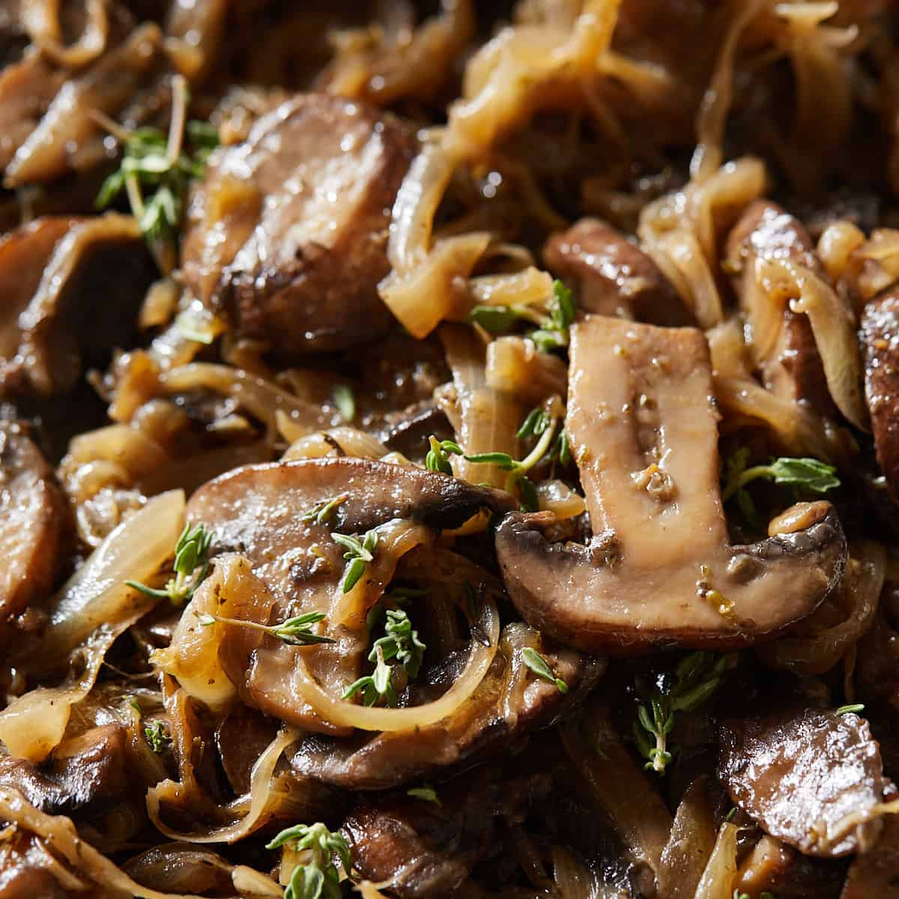

Caramelized mushrooms and onions

Ingredients
- Onions
- Mushrooms
- Butter
- Seasoning: salt, pepper, diced basil or other herbal seasoning (optional)
Steps
- Peel the onions' skin. Wash the onions and mushrooms.
- Cut the onions and mushrooms into bite size pieces per your preference.
- Heat up the pan to med-high. Then place a tablespoon of butter and when completely melt, place the chopped onions and mushrooms.
- Season with salt and pepper to your preference. Mix everything in the pan while heating for 1-2 minutes
- Remove from the pan and add optional diced basil/herbal seasoning. Enjoy with your meal.